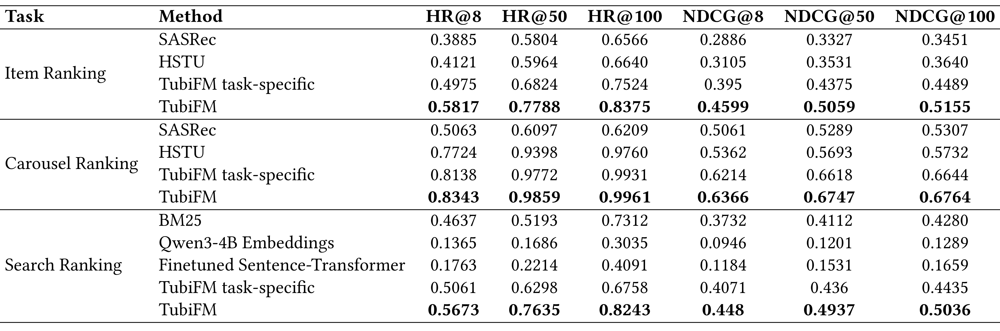
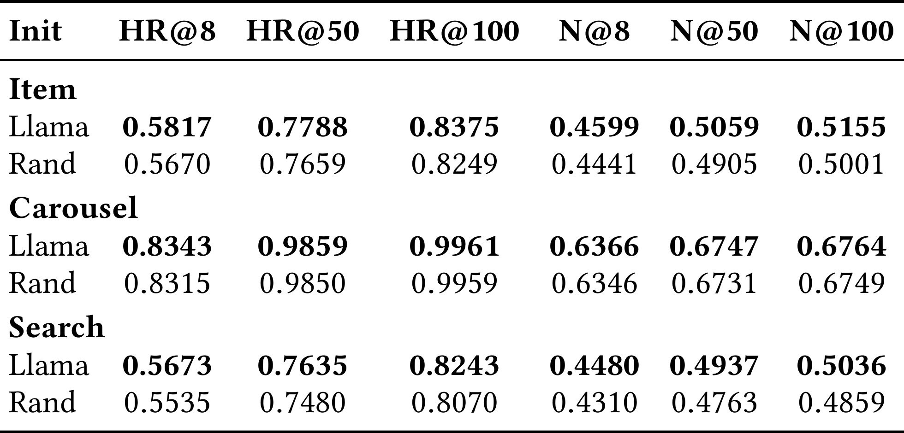
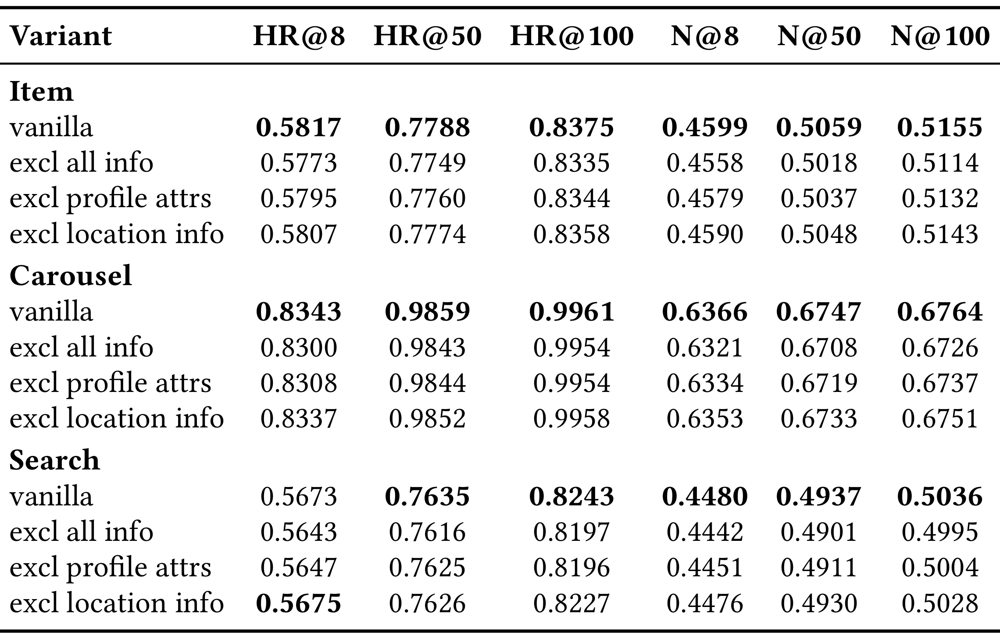
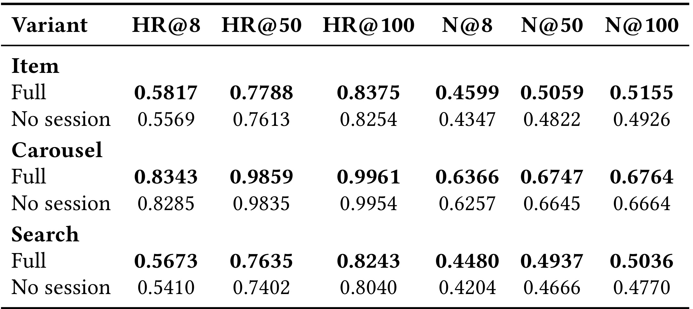
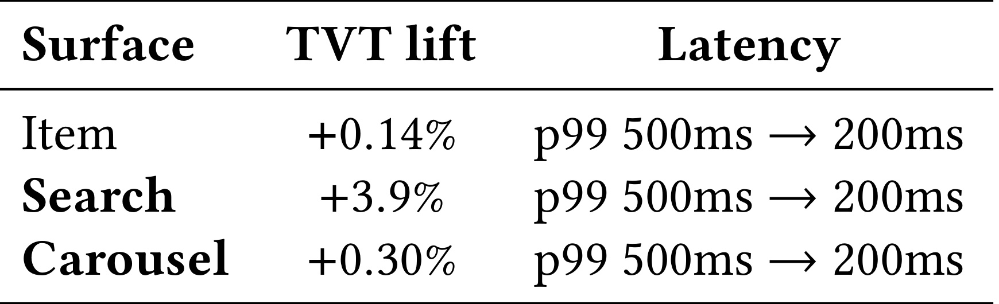

TubiFM: Unified Item, Carousel, and Search Ranking for Streaming Discovery：统一流媒体 Item、Carousel 与 Search Ranking 的 User Story 模型
论文入口：arXiv:2605.23702。作者：Alexandre Salle, Chenglei Niu, Suchismit Mahapatra, Xiaoxiao Chen, Suvash Sedhain, Yaqi Wang, Shervin Shahryari, Saurabh Agrawal, Qiang Chen, Michael Tamir。机构口径：Tubi / Fox 相关团队。主类别：推荐算法；公开日期：2026-05-22。
本文把流媒体用户观看、搜索、surface、carousel 和候选任务序列化成 user story，用一个 Llama 3.2 1B 风格模型统一 item ranking、carousel ranking 和 search ranking。新版笔记按数据表示、任务头、训练和线上结果顺序重写。
1. 背景和问题
TubiFM 面向流媒体发现系统中的多 surface 排序问题。首页 item ranking、carousel ranking 和 search ranking 往往由不同模型维护，特征、训练样本和上线节奏也各不相同。这样可以让每个 surface 独立优化，但用户兴趣很难跨 surface 共享：用户在搜索中表达的明确意图未必能进入首页排序，首页忽略的内容也不一定影响搜索结果。
论文的核心做法是把用户旅程写成 user story。这个 story 包含 session 分隔、观看事件、搜索词、surface、carousel id、item id 和候选任务提示。模型不是自由生成自然语言，而是在受控 token 空间里理解用户历史并对候选 item、carousel 或 search result 排序。它更像推荐系统 DSL，而不是开放式 conversational recommender。
统一模型的难点首先是数据协议。不同日志系统中的播放、搜索、曝光、页面容器和候选列表需要统一时间顺序、字段命名和 token 化方式。训练和线上若使用不同序列化器，模型学到的 user story 就会失效。因此 Figure 1 的 prompted formulation 示例是方法核心，而不只是示意图。
从组织角度看，TubiFM 还试图降低多模型维护成本。多个 surface 各自维护 specialist 模型时，特征定义和评估口径会分裂。统一 user story 至少让团队共享一套用户行为表示，即使后续仍保留 specialist reranker，也可以把 TubiFM 当作跨 surface 的表示层或候选打分器。
本文的评估也分为离线和在线两层。离线部分比较 SASRec、HSTU、BM25、Qwen embeddings 等 baseline 与 TubiFM；在线部分报告 A/B 中 item surface 的指标变化。读实验时要分别看 item、carousel、search 三个任务，因为统一模型可能在一个 surface 上收益明显，在另一个 surface 上接近 specialist。
重新生成笔记时，我把方法章节按论文自然顺序写成 user story representation、training data、prompted task heads、model training、serving path。实验部分则把数据统计、三任务主结果、初始化消融、属性消融、session 消融和线上表全部放进第三节。
TubiFM 的边界也很重要。它统一的是受控推荐任务，不是让 LLM任意编造影视标题。候选对象仍来自 catalog 与业务系统，排序结果仍受可播性、地域版权、内容策略和线上排序链路约束。生成式模型在这里承担的是 user story encoder 和 task-aware scorer。
流媒体推荐的多 surface 场景天然存在信号割裂。用户在 search 中输入的 query 通常是强意图，但首页模型未必能看到；用户在 carousel 中停留或跳过，也可能只影响该容器的局部模型。TubiFM 用 user story 把这些行为放进同一序列，试图让不同入口共享兴趣表示。
User story 的质量决定模型上限。若事件顺序、session 边界、surface 标识或 carousel id 缺失，统一模型只能看到混乱的 ID 串。论文的 Figure 1 看似简单，实际是在定义线上和离线必须一致的协议。
统一模型还会改变评估责任。过去 item、carousel、search 各自优化，指标归属清楚；统一模型上线后，一个 surface 的训练样本可能影响另一个 surface 的排序。离线表必须分任务报告，线上也要分入口监控，不能只看总体提升。
这篇论文的实验截图要求不只是放主结果表，还要放初始化、属性、session 和线上表。因为它的主张不是单点模型更强，而是统一输入协议在多个任务上稳定有效。
TubiFM 还隐含一个产品体验问题：用户不希望不同入口像彼此孤立的产品。Search 中表达的明确意图、首页中的跳过行为和 carousel 中的浏览上下文，都应该在后续推荐中留下可解释痕迹。
统一模型并不意味着所有 surface 使用同一套业务目标。Item、carousel 和 search 的候选来源、曝光形态和用户意图不同，模型统一的是输入表示和 backbone，评估仍必须保留任务边界。
从这篇论文的阅读顺序看，Tubi-TubiFM 还要求把问题定义、系统边界和实验证据先分开。user story、surface prompt、三任务排序和线上 serving 都会影响最终结论，如果背景只写成“方法有效”，读者无法判断收益来自任务设定、数据规模、工程约束还是评估协议。第 1 次补充只用于补足这一边界说明。
2. 方法
方法章从输入协议开始。用户故事 $S_u$ 由历史事件、session、surface、carousel、query 和候选项目按时间组织；任务 prompt $p$ 指定当前要做 item、carousel 还是 search ranking；模型输出候选得分或排序。
论文没有提出复杂新损失，而是强调把多个 surface 的行为放入同一语言模型式序列中。这样跨 surface 信号可以在预训练或微调过程中共享，任务差异则由 prompt 和候选集合表达。
TubiFM 的统一打分可以抽象为条件语言模型式排序：
符号解释：$S_u$ 是用户 story，$p$ 是任务 prompt，$C_p$ 是当前 surface 的候选集合，$c_j$ 是候选 item、carousel 或 search result，$f_{\theta}$ 是统一模型，$\hat{\pi}$ 是按分数排序后的列表。
2.1 user story 表示
TubiFM 的第一步是把用户行为转成 story。Story 中包含 session 信息、watch 事件、search query、surface、carousel 和 item token。每个事件不仅是 item id，还带有时间、位置或上下文字段，使模型能够从行为顺序中恢复用户意图。

图中展示了 TubiFM 如何把同一个用户历史组织成不同任务的输入。上方是训练样本中的 user story token 序列，左侧分别是 item、carousel、search 的用户属性和上下文，右侧是对应的 rank 输出。截图只包含 Figure 1 的图形区域，能够直观看到统一模型如何通过 prompt 适配三类 ranking，而不是把三套模型并排训练。
User story 的意义是让不同 surface 共享同一段历史。对于 item ranking，模型要理解用户近期观看和 surface；对于 carousel ranking，它还要理解容器主题；对于 search ranking，query 是强意图信号。统一 story 让这些信号在一个序列里出现。
围绕“user story 表示”，实现者需要先确认输入和输出边界。这里处理的是 user story 把观看、搜索、surface、carousel 和候选上下文写入统一序列，是 TubiFM 的输入协议。 如果边界没有写清，后续实验分数即使提升，也很难知道是模型能力、数据泄露、prompt 变化还是评估切分造成的。把边界写进方法小节，可以让读者顺着论文流程检查每个模块的责任。
在“user story 表示”这一步，还需要关注状态保存方式。user story 序列化、surface token、task prompt、三任务排序和线上 A/B 都不是一次性变量，而是会跨 batch、跨请求或跨评估周期保留的系统状态。状态一旦被更新，就应记录版本、触发条件和回滚依据；否则论文中的方法闭环在工程落地时会变成不可追踪的脚本。 方法检查点编号 1，用于区分该模块与相邻模块的状态风险。
从复现角度看，“user story 表示”对应的难点通常不在公式，而在数据接口。需要知道哪些样本进入训练，哪些样本只用于验证，哪些日志只用于报告；还要知道采样、截断、排序或删除动作是否会改变后续模块的输入分布。这个检查能避免把流水线副作用误读成算法收益。
评估时应把这个模块与后续图表对应起来。论文中每个关键表格都在回答一个具体问题：模块是否必要、超参是否敏感、效率是否可接受、迁移是否成立。如果方法小节没有提前解释模块目标，实验节的表格就会变成孤立数字。
失败模式也要提前写出。user story 把观看、搜索、surface、carousel 和候选上下文写入统一序列，是 TubiFM 的输入协议。 在理想条件下能改善系统，但在噪声反馈、分布漂移、过长输入、候选变化或安全约束改变时都可能退化。把失败模式放进方法说明，不会削弱论文贡献，反而能帮助读者判断它适合哪些生产场景。
阅读 1.jpg 时，我会把它和论文主张直接对应起来：它不是装饰性图片，而是在验证 user story 序列化、surface token、task prompt、三任务排序和线上 A/B 中某个环节是否真实成立。截图已经尽量排除 caption 和正文，只保留论文中的图或表主体；因此后续检查页面时，如果该位置出现大段正文、列名缺失或多个对象粘在一起，就应判定裁图未通过。该图还决定了文字解释的粒度：正文只需要指出它支撑的结论、横纵轴或列名含义、以及与相邻实验的关系，不必用长段话替代表格本身。
在“user story 表示”这一小节，还需要把实现检查点写成可执行清单：输入数据是否固定、状态是否版本化、评估切分是否独立、失败样本是否能回放、以及该模块的输出是否会被下游直接消费。这样读者检查论文时，不会只停留在概念层面，而能判断方法是否具备可复现接口。
在“训练样本与内部 streaming 数据”这一小节，还需要把实现检查点写成可执行清单：输入数据是否固定、状态是否版本化、评估切分是否独立、失败样本是否能回放、以及该模块的输出是否会被下游直接消费。这样读者检查论文时，不会只停留在概念层面，而能判断方法是否具备可复现接口。
2.2 训练样本与内部 streaming 数据
论文使用大规模内部 streaming 日志构建训练样本，包含 sampled viewers、unique titles、unique carousels、watches、searches 和 surface 信息。样本统计表说明模型不是在小型公开数据集上验证概念，而是在真实流媒体行为上训练。
数据协议需要处理 session 边界和事件截断。若历史过长，系统必须决定保留哪些观看、搜索和 surface 交互；若历史过短，模型又会缺少个性化信号。后续 session segmentation 消融正是检验这些设计是否必要。
围绕“训练样本与内部 streaming 数据”，实现者需要先确认输入和输出边界。这里处理的是 大规模内部日志提供多 surface 行为，样本构造决定模型能学到哪些跨入口信号。 如果边界没有写清，后续实验分数即使提升，也很难知道是模型能力、数据泄露、prompt 变化还是评估切分造成的。把边界写进方法小节，可以让读者顺着论文流程检查每个模块的责任。
在“训练样本与内部 streaming 数据”这一步，还需要关注状态保存方式。user story 序列化、surface token、task prompt、三任务排序和线上 A/B 都不是一次性变量，而是会跨 batch、跨请求或跨评估周期保留的系统状态。状态一旦被更新，就应记录版本、触发条件和回滚依据；否则论文中的方法闭环在工程落地时会变成不可追踪的脚本。 方法检查点编号 2，用于区分该模块与相邻模块的状态风险。
从复现角度看，“训练样本与内部 streaming 数据”对应的难点通常不在公式，而在数据接口。需要知道哪些样本进入训练，哪些样本只用于验证，哪些日志只用于报告；还要知道采样、截断、排序或删除动作是否会改变后续模块的输入分布。这个检查能避免把流水线副作用误读成算法收益。
评估时应把这个模块与后续图表对应起来。论文中每个关键表格都在回答一个具体问题：模块是否必要、超参是否敏感、效率是否可接受、迁移是否成立。如果方法小节没有提前解释模块目标，实验节的表格就会变成孤立数字。
失败模式也要提前写出。大规模内部日志提供多 surface 行为，样本构造决定模型能学到哪些跨入口信号。 在理想条件下能改善系统，但在噪声反馈、分布漂移、过长输入、候选变化或安全约束改变时都可能退化。把失败模式放进方法说明，不会削弱论文贡献，反而能帮助读者判断它适合哪些生产场景。
在“prompted task heads”这一小节，还需要把实现检查点写成可执行清单：输入数据是否固定、状态是否版本化、评估切分是否独立、失败样本是否能回放、以及该模块的输出是否会被下游直接消费。这样读者检查论文时，不会只停留在概念层面，而能判断方法是否具备可复现接口。
2.3 prompted task heads
TubiFM 用 prompt 指定当前任务，而不是为 item、carousel、search 分别训练完全独立模型。Prompt 把任务类型、候选集合和上下文条件加入输入，模型根据同一 backbone 输出排序。这个设计降低了多 surface 维护成本，也让跨任务迁移成为可能。
任务 prompt 还决定候选解释方式。Item ranking 的候选是具体 title，carousel ranking 的候选是内容容器，search ranking 的候选要结合 query。模型需要在同一 token 空间中理解这些对象，但排序指标仍按各任务单独计算。
围绕“prompted task heads”，实现者需要先确认输入和输出边界。这里处理的是 任务 prompt 指定 item、carousel 或 search ranking，让同一 backbone 产生不同读出。 如果边界没有写清，后续实验分数即使提升，也很难知道是模型能力、数据泄露、prompt 变化还是评估切分造成的。把边界写进方法小节，可以让读者顺着论文流程检查每个模块的责任。
在“prompted task heads”这一步，还需要关注状态保存方式。user story 序列化、surface token、task prompt、三任务排序和线上 A/B 都不是一次性变量，而是会跨 batch、跨请求或跨评估周期保留的系统状态。状态一旦被更新，就应记录版本、触发条件和回滚依据；否则论文中的方法闭环在工程落地时会变成不可追踪的脚本。 方法检查点编号 3，用于区分该模块与相邻模块的状态风险。
从复现角度看，“prompted task heads”对应的难点通常不在公式，而在数据接口。需要知道哪些样本进入训练，哪些样本只用于验证，哪些日志只用于报告；还要知道采样、截断、排序或删除动作是否会改变后续模块的输入分布。这个检查能避免把流水线副作用误读成算法收益。
评估时应把这个模块与后续图表对应起来。论文中每个关键表格都在回答一个具体问题：模块是否必要、超参是否敏感、效率是否可接受、迁移是否成立。如果方法小节没有提前解释模块目标，实验节的表格就会变成孤立数字。
失败模式也要提前写出。任务 prompt 指定 item、carousel 或 search ranking，让同一 backbone 产生不同读出。 在理想条件下能改善系统，但在噪声反馈、分布漂移、过长输入、候选变化或安全约束改变时都可能退化。把失败模式放进方法说明，不会削弱论文贡献，反而能帮助读者判断它适合哪些生产场景。
在“模型训练与初始化”这一小节，还需要把实现检查点写成可执行清单：输入数据是否固定、状态是否版本化、评估切分是否独立、失败样本是否能回放、以及该模块的输出是否会被下游直接消费。这样读者检查论文时，不会只停留在概念层面，而能判断方法是否具备可复现接口。
2.4 模型训练与初始化
论文使用 Llama 3.2 1B 风格模型，并比较 Llama initialization 与 random initialization。初始化消融显示预训练语言模型带来的文本和序列建模能力有帮助，尤其是在 carousel 和 search 等上下文较强的任务中。
训练目标围绕候选排序，而不是自然语言生成。模型从 user story 和 prompt 中产生候选分数，离线用 HR 与 NDCG 检查排序质量。这个目标保持了生产排序系统需要的可评估性。
围绕“模型训练与初始化”，实现者需要先确认输入和输出边界。这里处理的是 Llama 初始化、候选排序目标和 HR/NDCG 指标共同定义训练方式。 如果边界没有写清，后续实验分数即使提升，也很难知道是模型能力、数据泄露、prompt 变化还是评估切分造成的。把边界写进方法小节，可以让读者顺着论文流程检查每个模块的责任。
在“模型训练与初始化”这一步，还需要关注状态保存方式。user story 序列化、surface token、task prompt、三任务排序和线上 A/B 都不是一次性变量，而是会跨 batch、跨请求或跨评估周期保留的系统状态。状态一旦被更新，就应记录版本、触发条件和回滚依据；否则论文中的方法闭环在工程落地时会变成不可追踪的脚本。 方法检查点编号 4，用于区分该模块与相邻模块的状态风险。
从复现角度看，“模型训练与初始化”对应的难点通常不在公式，而在数据接口。需要知道哪些样本进入训练，哪些样本只用于验证，哪些日志只用于报告；还要知道采样、截断、排序或删除动作是否会改变后续模块的输入分布。这个检查能避免把流水线副作用误读成算法收益。
评估时应把这个模块与后续图表对应起来。论文中每个关键表格都在回答一个具体问题：模块是否必要、超参是否敏感、效率是否可接受、迁移是否成立。如果方法小节没有提前解释模块目标，实验节的表格就会变成孤立数字。
失败模式也要提前写出。Llama 初始化、候选排序目标和 HR/NDCG 指标共同定义训练方式。 在理想条件下能改善系统，但在噪声反馈、分布漂移、过长输入、候选变化或安全约束改变时都可能退化。把失败模式放进方法说明，不会削弱论文贡献，反而能帮助读者判断它适合哪些生产场景。
在“线上 serving 与 daily refresh”这一小节，还需要把实现检查点写成可执行清单：输入数据是否固定、状态是否版本化、评估切分是否独立、失败样本是否能回放、以及该模块的输出是否会被下游直接消费。这样读者检查论文时，不会只停留在概念层面，而能判断方法是否具备可复现接口。
2.5 线上 serving 与 daily refresh
TubiFM 的线上应用需要把 user story 构建、候选生成和模型打分接入现有推荐链路。模型可以作为统一 reranker 或为多个 surface 提供共享特征，但仍要服从 catalog、可播性和业务规则。
在线表显示论文不仅做离线 ranking，还报告了 TubiFM 在真实流量中的 A/B 结果。对工业推荐论文来说，线上验证能帮助判断离线指标是否转化为用户行为变化，尤其是 item surface 的观看和点击相关指标。
围绕“线上 serving 与 daily refresh”，实现者需要先确认输入和输出边界。这里处理的是 线上需要 story builder、候选系统和模型打分协同，并控制输入长度和刷新成本。 如果边界没有写清，后续实验分数即使提升，也很难知道是模型能力、数据泄露、prompt 变化还是评估切分造成的。把边界写进方法小节，可以让读者顺着论文流程检查每个模块的责任。
在“线上 serving 与 daily refresh”这一步，还需要关注状态保存方式。user story 序列化、surface token、task prompt、三任务排序和线上 A/B 都不是一次性变量，而是会跨 batch、跨请求或跨评估周期保留的系统状态。状态一旦被更新，就应记录版本、触发条件和回滚依据；否则论文中的方法闭环在工程落地时会变成不可追踪的脚本。 方法检查点编号 5，用于区分该模块与相邻模块的状态风险。
从复现角度看，“线上 serving 与 daily refresh”对应的难点通常不在公式，而在数据接口。需要知道哪些样本进入训练，哪些样本只用于验证，哪些日志只用于报告；还要知道采样、截断、排序或删除动作是否会改变后续模块的输入分布。这个检查能避免把流水线副作用误读成算法收益。
评估时应把这个模块与后续图表对应起来。论文中每个关键表格都在回答一个具体问题：模块是否必要、超参是否敏感、效率是否可接受、迁移是否成立。如果方法小节没有提前解释模块目标，实验节的表格就会变成孤立数字。
失败模式也要提前写出。线上需要 story builder、候选系统和模型打分协同，并控制输入长度和刷新成本。 在理想条件下能改善系统，但在噪声反馈、分布漂移、过长输入、候选变化或安全约束改变时都可能退化。把失败模式放进方法说明，不会削弱论文贡献，反而能帮助读者判断它适合哪些生产场景。
方法复核时，我会把 Tubi-TubiFM 的每个模块都映射到可执行产物：输入张量或文本是什么，状态如何保存，评分器如何调用，失败样本如何进入下一轮，以及该模块对应哪张实验表。这样写可以防止方法部分只剩概念说明，也能让后续裁图和表格解释有明确锚点。第 2 次补充强调的是可复现接口。
方法复核时，我会把 Tubi-TubiFM 的每个模块都映射到可执行产物：输入张量或文本是什么，状态如何保存，评分器如何调用，失败样本如何进入下一轮，以及该模块对应哪张实验表。这样写可以防止方法部分只剩概念说明，也能让后续裁图和表格解释有明确锚点。第 3 次补充强调的是可复现接口。
3. 实验结果
实验表按数据规模、离线主结果、消融和线上 A/B 顺序放置。TubiFM 的重点是三任务统一，因此每张表都要看 item、carousel、search 三个块，而不是只看平均值。
3.1 数据规模

Table 1 给出内部 streaming 数据统计，包括约 20M sampled viewers、约 100K titles、约 1K carousels、约 800M watches、约 66M searches，以及 Home、Search、Browse、Autoplay 等 surfaces。这个表说明 user story 覆盖多个行为源，模型不是只在单一观看序列上训练。
阅读 2.jpg 时，我会把它和论文主张直接对应起来：它不是装饰性图片，而是在验证 user story 序列化、surface token、task prompt、三任务排序和线上 A/B 中某个环节是否真实成立。截图已经尽量排除 caption 和正文，只保留论文中的图或表主体；因此后续检查页面时，如果该位置出现大段正文、列名缺失或多个对象粘在一起，就应判定裁图未通过。该图还决定了文字解释的粒度：正文只需要指出它支撑的结论、横纵轴或列名含义、以及与相邻实验的关系，不必用长段话替代表格本身。
3.2 三任务离线主结果

Table 2 是核心离线结果，分别报告 item ranking、carousel ranking 和 search ranking 的 HR@8/50/100 与 NDCG@8/50/100。TubiFM 在多个任务上优于 SASRec、HSTU、BM25 和 embedding baseline，尤其体现统一 story 对跨 surface 排序的帮助。表格完整保留三块任务，便于检查收益是否均衡。
阅读 3.jpg 时，我会把它和论文主张直接对应起来：它不是装饰性图片，而是在验证 user story 序列化、surface token、task prompt、三任务排序和线上 A/B 中某个环节是否真实成立。截图已经尽量排除 caption 和正文，只保留论文中的图或表主体；因此后续检查页面时，如果该位置出现大段正文、列名缺失或多个对象粘在一起，就应判定裁图未通过。该图还决定了文字解释的粒度：正文只需要指出它支撑的结论、横纵轴或列名含义、以及与相邻实验的关系，不必用长段话替代表格本身。
3.3 初始化消融

Table 3 比较 Llama initialization 与 random initialization。Llama 初始化在 item、carousel、search 多数指标上略优，说明通用语言模型预训练对 user story 的结构化 token 仍有迁移价值。这个结果也提示，TubiFM 不是简单 ID embedding 模型，文本和事件序列建模能力确实参与排序。
阅读 4.jpg 时，我会把它和论文主张直接对应起来：它不是装饰性图片，而是在验证 user story 序列化、surface token、task prompt、三任务排序和线上 A/B 中某个环节是否真实成立。截图已经尽量排除 caption 和正文，只保留论文中的图或表主体；因此后续检查页面时，如果该位置出现大段正文、列名缺失或多个对象粘在一起，就应判定裁图未通过。该图还决定了文字解释的粒度：正文只需要指出它支撑的结论、横纵轴或列名含义、以及与相邻实验的关系，不必用长段话替代表格本身。
3.4 粗粒度属性消融

Table 4 移除 all info、profile attributes 或 location info，观察三任务指标变化。大多数情况下 full/vanilla 版本更稳，说明用户属性和上下文信息虽然不是唯一信号，但对部分 surface 有增益。这个表适合检查 user story 字段是否都值得保留。
阅读 5.jpg 时，我会把它和论文主张直接对应起来：它不是装饰性图片，而是在验证 user story 序列化、surface token、task prompt、三任务排序和线上 A/B 中某个环节是否真实成立。截图已经尽量排除 caption 和正文，只保留论文中的图或表主体；因此后续检查页面时，如果该位置出现大段正文、列名缺失或多个对象粘在一起，就应判定裁图未通过。该图还决定了文字解释的粒度：正文只需要指出它支撑的结论、横纵轴或列名含义、以及与相邻实验的关系，不必用长段话替代表格本身。
3.5 session segmentation 消融

Table 5 比较 full 与 no session。去掉 session 后 item、carousel、search 的 HR 和 NDCG 都有不同程度下降，说明 session 边界是理解用户短期意图的重要字段。对流媒体推荐来说，同一用户的长期偏好和当前观看会话可能差异很大，session token 能帮助模型区分两者。
阅读 6.jpg 时，我会把它和论文主张直接对应起来：它不是装饰性图片，而是在验证 user story 序列化、surface token、task prompt、三任务排序和线上 A/B 中某个环节是否真实成立。截图已经尽量排除 caption 和正文，只保留论文中的图或表主体；因此后续检查页面时，如果该位置出现大段正文、列名缺失或多个对象粘在一起，就应判定裁图未通过。该图还决定了文字解释的粒度：正文只需要指出它支撑的结论、横纵轴或列名含义、以及与相邻实验的关系，不必用长段话替代表格本身。
3.6 线上 A/B 结果

Table 6 报告线上 input tokens 与 average output tokens 的关系，以及 output/input 比例。它展示了模型服务时序列长度和输出成本的量级。虽然表格较小，但对生产部署非常关键：统一模型提升质量之外，还必须控制输入长度和输出生成成本，避免排序延迟过高。
阅读 7.jpg 时，我会把它和论文主张直接对应起来：它不是装饰性图片，而是在验证 user story 序列化、surface token、task prompt、三任务排序和线上 A/B 中某个环节是否真实成立。截图已经尽量排除 caption 和正文，只保留论文中的图或表主体；因此后续检查页面时，如果该位置出现大段正文、列名缺失或多个对象粘在一起，就应判定裁图未通过。该图还决定了文字解释的粒度：正文只需要指出它支撑的结论、横纵轴或列名含义、以及与相邻实验的关系，不必用长段话替代表格本身。
这些实验图表合在一起形成 Tubi-TubiFM 的证据闭环：先看主结果是否支持论文目标，再看消融或趋势是否解释模块贡献，最后看效率、成本、线上或定性案例是否暴露落地边界。新版笔记因此保留多张表格，而不是把实验部分压缩成一段总评。第 4 次补充用于说明证据链。
4. 总结
TubiFM 的贡献是用 user story 把 item、carousel 和 search ranking 放进同一个模型输入协议中，让跨 surface 用户兴趣可以共享。它不是开放生成影视内容，而是在受控候选集合上做 task-aware ranking。
新版笔记已经把方法按论文实际顺序重写：user story、数据构造、prompted task heads、训练初始化和线上 serving。实验部分补齐了主结果、初始化、属性、session 和线上成本表，能够直接检查各任务的指标变化。
实际落地时，最需要关注的是序列化一致性和线上延迟。训练与服务必须使用同一套 story builder；候选集合、版权可播性和业务规则仍在模型外部约束；上线评估也要按 surface 分开看，避免一个统一模型在平均指标上好看但牺牲某个关键入口体验。
TubiFM 的本质是把推荐日志变成模型可读的结构化语言。它保留了工业排序的候选约束，同时利用语言模型处理异构事件序列的能力。
检查新版流水线时，应确认方法中出现 Figure 1 的 user story 示例，实验中出现 Table 1 到 Table 6。若只有主结果而没有消融和线上成本，就无法判断统一 story 的关键字段是否必要。
实际落地最容易出问题的是训练服务不一致。Story builder、token vocabulary、session 切分和候选生成都必须版本化；一旦线上少了训练时依赖的字段，统一模型会比 specialist 模型更难排查。
后续若要深入 TubiFM，应重点追问统一模型在不同 surface 的冲突处理。例如 search 的强意图是否会过度影响首页，carousel 的容器语义是否会限制 item 多样性，这些都需要线上分入口指标回答。
对笔记流水线而言，TubiFM 的检查重点是表格是否完整。Table 2、4、5 的列很多，若裁剪不全，读者无法检查 HR 与 NDCG 在三任务上的差异。
继续检查 Tubi-TubiFM 时，还应把本篇当作流水线样本而不是单篇摘要：方法标题是否按论文顺序，实验截图是否覆盖主要证据，figure_plan 是否能说明每张图的取舍，最终网页是否与本地 Markdown 保持一致。该补充编号 1 用于补齐总结检查口径。
继续检查 Tubi-TubiFM 时，还应把本篇当作流水线样本而不是单篇摘要：方法标题是否按论文顺序，实验截图是否覆盖主要证据，figure_plan 是否能说明每张图的取舍，最终网页是否与本地 Markdown 保持一致。该补充编号 2 用于补齐总结检查口径。
继续检查 Tubi-TubiFM 时，还应把本篇当作流水线样本而不是单篇摘要：方法标题是否按论文顺序，实验截图是否覆盖主要证据，figure_plan 是否能说明每张图的取舍，最终网页是否与本地 Markdown 保持一致。该补充编号 3 用于补齐总结检查口径。